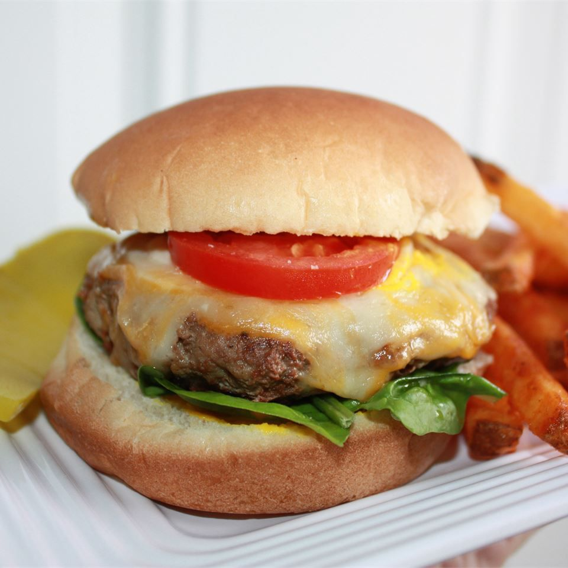

Turkey Burgers

Description
An easy and scrumptious new meal idea! Serve on buns with lettuce, tomatoes, and condiments.
Ingredients
- 1 pound ground turkey
- 1 packet dry onion soup mix
- 0.5 cup water
- 0.5 teaspoon salt
- 0.5 teaspoon ground black pepper
Steps
- Preheat a grill for high heat.
- In a large bowl, combine the ground turkey, soup mix, and water. Season with salt and pepper. Mix lightly using your hands, and form into 4 patties.
- Lightly oil the grill grate. Grill patties 5 to 10 minutes per side, until well done.
Home